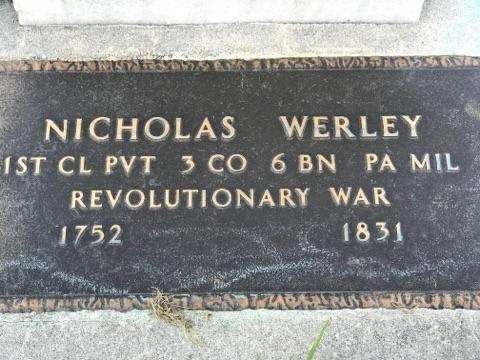

Well why not? The thing you are looking for is spirit energy. Strong emotions associated with certain graves seem to elicit responses. I've read some paranormal investigators don't belive in investigating them, I tend to disagree. We seem to get more responses there than anywhere else. Plus there are graveyards EVERYWHERE! Walking through one is like walking thru time. Some have very old sections that have graves of people who fought in the Revolutionary War.....War of 1812....World War 1.

You see sad stories develop at the grave of a child only a few days old, at one place there were 4 graves of children all together. The incredible sadness that family must have felt is heart breaking. If you do decide to hit some graveyards, be respectful. People with loved ones at eternal rest there don't want ghost hunters tramping all over the place. Try to pick ones that are not near major roads, strange as it seems the lonelier locations seem to give more responses. Also alot of the responses we get seem to be residual. Finally most cemetaries have hours of operation, usually dawn to dusk. You may have to be stealthy if you decide to try your IR and night vision cameras, again please be respectful!!


{kind=link}
{kind=link}